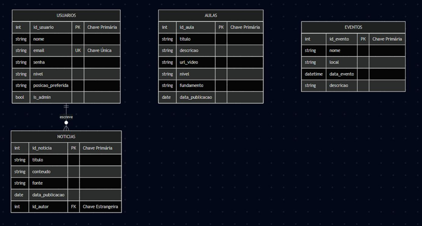

Sobre o Projeto
O Vôlei Online é uma aplicação web desenvolvida como Projeto de Extensão do curso de Engenharia de Software da UniFil.
A proposta é reunir em um único ambiente conteúdos para pessoas que desejam aprender, praticar ou acompanhar o vôlei, incluindo tanto o vôlei de quadra quanto o vôlei de praia.
Objetivo
O projeto busca facilitar o acesso a conteúdos relacionados ao vôlei, reunindo aulas em vídeo, notícias, eventos e recursos de interação entre usuários em uma única plataforma.
Principais Funcionalidades
- Aulas em vídeo sobre fundamentos do vôlei;
- Conteúdos organizados por nível de experiência;
- Separação entre vôlei de quadra e vôlei de praia;
- Notícias recentes relacionadas ao esporte;
- Agenda de campeonatos e eventos;
- Cadastro e login de usuários;
- Perfil público e edição de perfil;
- Recuperação de senha por e-mail;
- Fórum para interação entre os usuários.
Tecnologias Utilizadas
- HTML
- CSS
- JavaScript
- Node.js
- Express
- PostgreSQL / Neon
- Google Gemini API
- Google Notícias RSS
- Resend
- GitHub
- Render
Diagramas do Projeto
Durante as etapas de desenvolvimento foram criados diagramas para representar os requisitos, a estrutura e a organização inicial do sistema.
Diagrama de Casos de Uso

Representação dos usuários e das principais funcionalidades previstas para o sistema.
Diagrama Entidade-Relacionamento (DER)

Modelagem inicial das principais entidades e dados do sistema.
Diagrama de Classes

Representação das principais classes planejadas durante a etapa de modelagem.
Projeto Online
O código-fonte e a aplicação podem ser acessados através dos links abaixo:
Integrantes
Paulo Henrique Farias Lima
Vitor Emanoel Pontes Jacinto
Engenharia de Software — UniFil